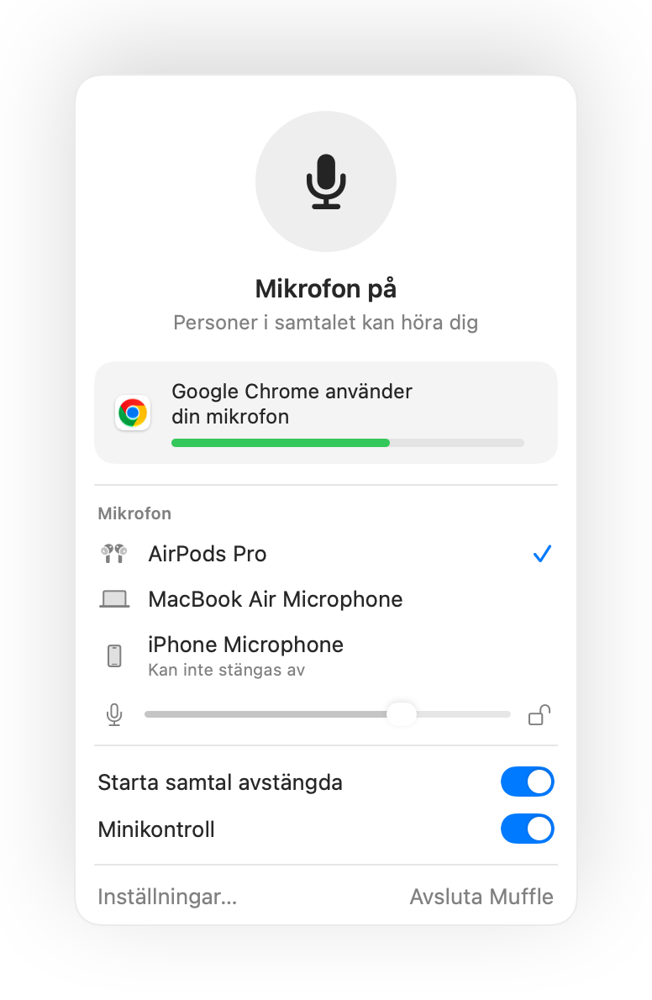

Så hindrar du appar från att ändra din mikrofonvolym på en Mac
Många samtalsappar justerar din ingångsnivå på egen hand med automatisk förstärkningskontroll. Du ställer in en bra nivå i Systeminställningar och ansluter till ett Google Meet-samtal. Några minuter senare har reglaget flyttats och andra i mötet säger att du hörs för lågt eller med distorsion.
Muffle kan låsa din mikrofonnivå. Om en app ändrar den återställer Muffle den direkt.
Prova Muffle gratis i 3 dagarKommer snart till Mac App Store
Lås din mikrofonnivå
- Installera Muffle.
- Klicka på Muffle-ikonen i menyraden och ställ in din nivå med mikrofonreglaget.
- Klicka på låset bredvid reglaget.
- Gå med i dina samtal. Din nivå stannar precis där du ställde in den.

- Muffle varnar dig i panelen om din nivå är för låg under ett samtal.
- Låset kommer ihåg nivån för varje mikrofon separat, så dina AirPods och din Macs mikrofon behåller sina egna inställningar.
Frågor
Varför ändras mikrofonvolymen på min Mac hela tiden?
Appar som Chrome, Zoom och Teams använder automatisk förstärkningskontroll och ändrar systemets ingångsnivå medan du pratar.
Kan jag fortfarande ändra nivån själv?
Ja. Använd reglaget i Muffle-panelen så uppdateras den låsta nivån.